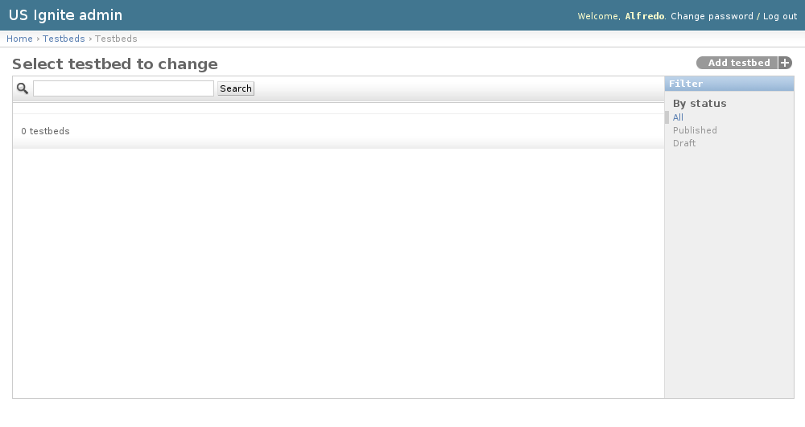
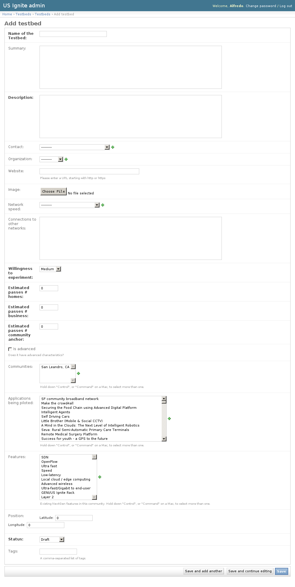
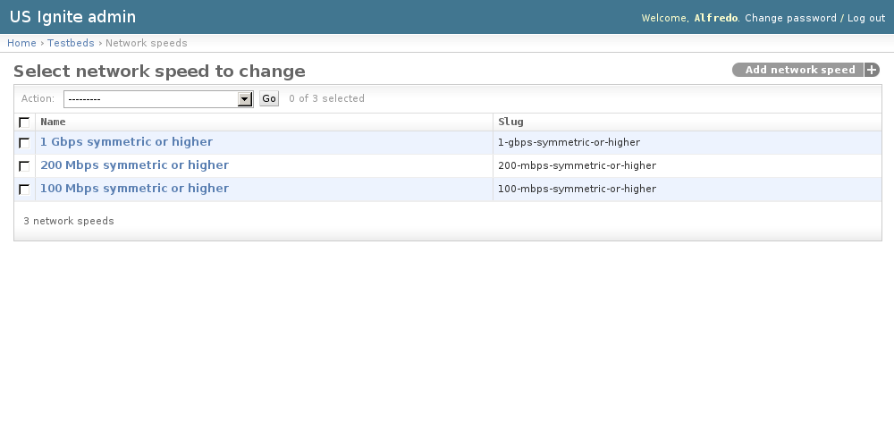
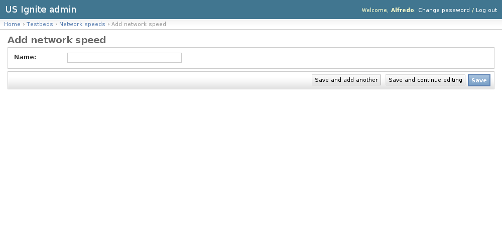

Testbeds admin section
This section list the testbeds section and its usage in the site.
View existing Testbeds
The existing Testbeds can be listed in the /admin/testbeds/testbed/ URL. From this section the details of these Testbeds can be inspected.
And the following actions can be performed:
- View the details of the Testbeds.
- Filter the Testbeds by: status.
- Search the Testbeds by their contents.

Adding Testbeds
Testbeds can be only added by US Ignite. Adding Testbeds can be done from the /admin/testbeds/testbed/add/ URL.
The following fields are available to create Testbeds:
- Name of the Testbed: Required.
- Summary: Optional. Short description of the Testbed.
- Description: Required.
- Contact: Optional. User to be contacted for this testbed.
- Organization: Optional. Organization associated to this testbed.
- Website: Optional. Fully qualified URL associated to this Testbed.
- Image: Optional. Image used for this resource.
- Network speed: Optional.
- Connections to other networks: Optional. Description of the conections of this testbed to other networks.
- Willingness to experiment: Required. Desire to experiment on these testbeds.
- Estimated passes # homes: Required. Number of estimated homes.
- Estimated passes # business: Required. Number of estimaed business.
- Estimated passes # community anchor: Required. Number of estimated anchors.
- Is advanced: Optional. Determines if this network has advanced characteristics.
- Communities: Optional. Communities associated to this testbed.
- Applications being piloted: Optional. Applications being piloted in this testbed.
- Features: Optional. Existing NextGen features in this testbed.
- Position: Optional. Localization of this testbed in a map.
- Status: Required. Publication status of this testbed in a map.
- Tags: Optional. A comma-separated list of tags.

Unpublishing / Removing Testbeds
In case Testbeds needs unpublishing it can be done from the detail admin view by changing the status of the Testbeds to draft or removed
Note
The Testbeds can be browsed in the /admin/testbeds/testbed/ URL.
View existing Network Speeds
The existing Network Speeds can be listed in the /admin/testbeds/networkspeed/ URL. From this section the details of these Network Speeds can be inspected.
And the following actions can be performed:
- View the details of the Network Speeds.

Adding Network Speeds
Adding Network Speeds can be done from the /admin/testbeds/networkspeed/add/ URL.
The following fields are available to create Network Speeds:
- Name: Required. Name used in the network speed.

{kind=link}
{kind=link}
{kind=link}
{kind=link}